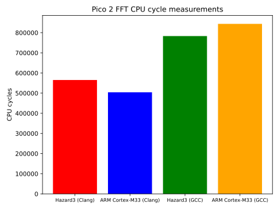
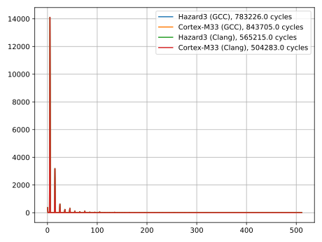
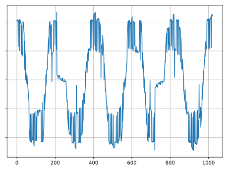

Experimenting with FFT on Raspberry Pi Pico 2
Over the past months I have managed to set up a small custom Rasbperry Pi Pico 2 sandbox by studying the RP2350 datasheet and the bare metal Pico 2 environment repo written by Douglas Summerville. The sandbox supports both Hazard3 and ARM Cortex-M33 cores. To play around with the sandbox, I decided to implement a Fast Fourier transform(FFT) with Q1.31 fixed point arithmetic.
Implementation
Since Hazard 3 does not support floating point arithmetic, the complex calculations required by the FFT were performed using Q1.31 fixed point arihmetic with integers of type int32_t. In Q1.31, the value of the integer expresses a real number between the range $[-1, 1)$. The relationship between the integer value $x$ and the corresponding real value is expressed by $f(x)=2^{-31}\cdot x$ for Q1.31.
Using Q1.31 meant that regular floating point $\cos$ and $\sin$ functions were out of the question. Instead, I generated a look-up table (LUT) containing values of $\cos(x)$ with $1024$ entries with entry $i$ of the LUT representing $\cos\left(\frac{2\pi i}{1024}\right)$ in Q1.31. Using the relationship $\sin\left(\frac{2\pi i}{1024}\right)=\cos\left(\frac{2\pi i}{1024}+\frac{3\pi}{2}\right)=\cos\left(\frac{2\pi(i+768)}{1024}\right)$ values for $\sin$ can also be obtained using the LUT.
The FFT algorithm described in this post was used with minor adjustments to suit the Q1.31 arithmetic and the LUT implementation.
Fooling around
To test the FFT, serial communication between the host computer and Pico 2 was set up. On the host, a cosine input signal with integer values in range $\left[0, 255\right]$ was prepared and sent to Pico 2 over serial port. The recieved signal was scaled to Q1.31 using equation
\[\begin{equation} x_\mathrm{Q1.31}=(x_\mathrm{in}-128)\cdot2^{24}, \end{equation}\]
where $x_\mathrm{in}$ is an input signal data point. The FFT was performed on the input signal multiple times with different compiler/core combinations. The CPU cycle counts for each combination is presented in Figure 1.

The FFT implementation compiled with Clang and performed on Cortex-M33 proved out to take the least CPU cycles. Clang proved out to produce FFTs with less CPU cycle counts overall, with difference to FFTs compiled with GCC being in the magnitude of approximately $10^5$ CPU cycles with the smallest measured cycle count being $504283$ and largest being 843705. The FFT of the cosine input signal $128\cdot\cos\left(\frac{10\pi i}{1024}\right)+128,~i=0,1,...,1024$ is presented in Figure 2 and the reconstructed signal obtained by taking an inverse FFT of the result is shown in Figure 3.
 
The FFT has its largest peek around $i=5$, which is expected since a single waveform cycle spans for $2\pi\cdot\left(\frac{10\pi}{1024}\right)^{-1}=204.8$ bin indexes giving $\frac{1024}{204.8}=5$ complete waveform cycles for a $1024$ bin window.
Even though the reconstruction is quite noisy, the waveform cycles match the original signal. There are various potential causes for the noise, such as saturation/overflow guards used in fixed point arithmetic.
The end
And thats about it. There now exists slightly sketchy FFT implementation for Pico 2 using fixed point arithmetic. Whether it is useless (probably) or not is just a secondary thought. I had a lot of fun implementing it and putting the custom Pico 2 sandbox environment into use.